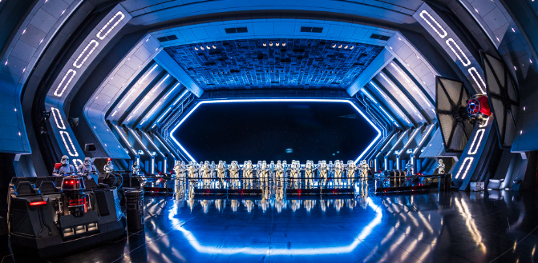
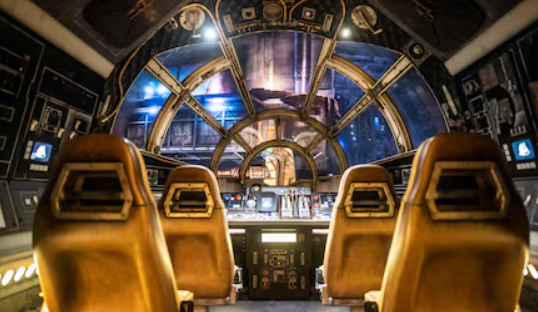
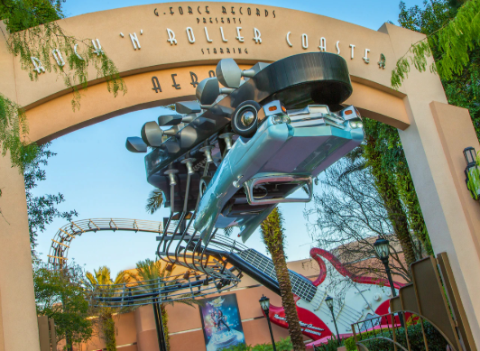
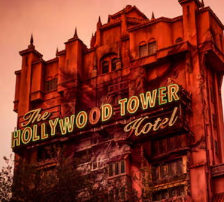
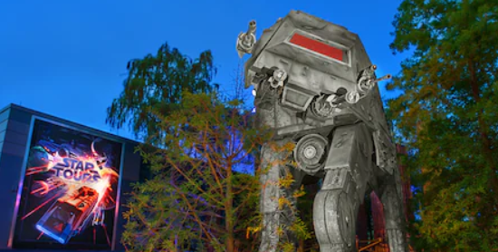

Hollywood Studios - Thrill Seeking Day
For starters most of these rides have a minimum 48 inches height requirement. So take that into consideration even if you have kids who love rollercoasters. This park is themed more towards adults so there is more rides for them than there is kids. This is a very movie themed park with lots of its rides getting inspiration from different movies.
Rise of the Resistance
The very first ride you want to go to is Rise of the Resistance. This ride feels like you never know when it is going to start because of how the line is and that is truly amazing. This ride is very fun and there is lots of build up before you even get on the ride.
Millennium Falcon Smugglers Run
This ride is right next to the first one so it is important that you head here right after as it can build up quite the line. This is an interactive exxperince. But because each ship can only hold six people it get quite the line build up. As you sit in each memeber on the ship gets their own job and if you dont do it right it could lead to your ship crashing.
Rock 'n' Roller Coaster
This roller coast goes upside down mulitple times so be prepared for that when you go to get in line. This ride is also in the dark with bright neon road sings in the ride so if you get motion sickness this may not be your ride.
The Twlight Zone Tower of Terror
Tower of Terror is like one big drop. As you can see it is the tallest ride amoung all of the other ones in the park so just be prepared for lots of big drops when you go to ride this ride.
Star Tours
This is a good ride to end your day. You will be over in Star wars land and this will allow you to sit down for a little while still having the thrill of a ride. If you get motion sickness this may not be the ride for you as it is a 3-D experince.